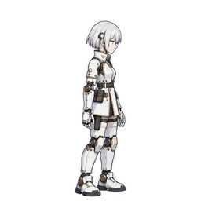

Android seryjny
Android
Przegląd
| HP (wartość bazowa) | 30 |
|---|---|
| Częstość ataku | x1.25 |
| Szybkość | Normalna |
| Ruch | Naziemni |
| Zachowanie | Goni bohaterkę |
| Zasięg wykrywania | 6 pól |
| Występuje na | Etap 101 - Etap 120 |
| Dodatkowy teren | Brak |
| Cechy |
|
Pułapki, które na niego nie działają
Wyliczone wyłącznie z danych pułapek (rodzaj ruchu, ignorowane cechy i odporność rodziny wrogów). Nie uwzględniono specjalnych reguł bossów ani poziomów pułapek.
| Pułapka | Powód |
|---|---|
| Działa tylko na wybrane rodziny wrogów lub rodzaje ruchu | |
| Każdy efekt należy do rodzaju, na który ta rodzina jest odporna | |
| Nie może celować we wrogów typu Naziemni | |
| Nie może celować we wrogów typu Naziemni | |
| Działa tylko na wybrane rodziny wrogów lub rodzaje ruchu |